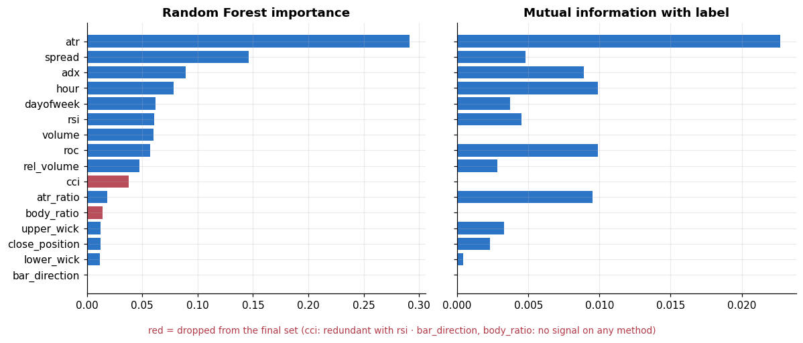
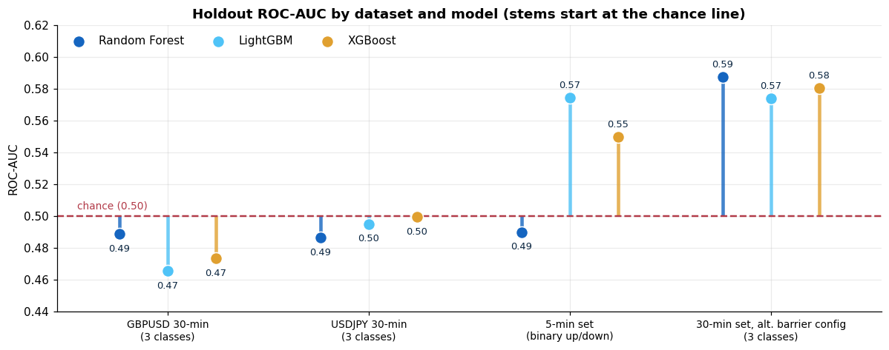

Market Direction Prediction: From Chart-Image CNN to Tabular ML#
Type |
Personal machine-learning project |
Domain |
Financial time series · Forex (GBPUSD, USDJPY) |
Tools |
Python, pandas, NumPy, scikit-learn, LightGBM, XGBoost, Optuna, |
Date |
2026 |
Repository |
[GitHub repo link] |
TL;DR: An end-to-end pipeline that pulls raw price bars from MetaTrader 5, engineers technical and candle-shape features, labels each bar by whether price hits an ATR-scaled upper or lower target first, and compares tuned Random Forest, LightGBM, and XGBoost classifiers with time-aware validation. The project started as a chart-image CNN and evolved into a tabular approach. The honest outcome: only a weak signal (walk-forward CV AUC ≈ 0.55, holdout AUC between 0.47 and 0.59), and the main lesson is about rigorous, leakage-free evaluation.
30-min bars per FX pair (Jan 2022 to Sep 2026)
engineered model features
model families tuned with Bayesian search (Optuna)
tuned walk-forward CV AUC (chance = 0.50)
1. Problem Statement#
Can simple, interpretable market features predict whether price will move up, down, or stay neutral over the next few hours, and can that signal survive time-aware validation?
Objectives
Build a reproducible data pipeline from a broker feed to a model-ready table.
Define a label that reflects a tradable move (volatility-scaled), not just “next candle up/down”.
Identify which features carry signal and which are redundant.
Tune and compare tree-ensemble models without look-ahead leakage.
Report results honestly, including when there is little to no edge.
Project evolution
Phase |
Idea |
What exists in the repo |
|---|---|---|
1. Chart-image CNN |
Render 30-candle price windows as images labelled |
Image-dataset generator ( |
2. Tabular ML |
Engineer indicator/candle features and use gradient-boosted trees |
Feature pipeline, feature analysis, Optuna tuning, model evaluation notebooks |
2. Data & Storage#
Layer |
Details |
|---|---|
Source |
MetaTrader 5 broker feed via the |
Raw fields |
|
Volume |
GBPUSD 30-min: 58,615 bars; USDJPY 30-min: 58,618 bars (2022-01-03 to 2026-09-18). A 5-minute set hit the broker’s ~100k-bar cap (99,999 bars from May 2025); a daily set has 446 bars. |
In-memory |
|
On disk |
Feature tables saved as CSV snapshots (e.g. |
Repo hygiene |
Large/derived folders ( |
3. Preprocessing & Feature Engineering#
Cleaning steps
Parse timestamps →
DatetimeIndex, sort ascending, drop unusedreal_volume(all zeros for FX).Check whether volume is populated; only build volume features if it is.
Replace impossible zeros with
NaN(atr,adx) and guard divisions by zero-range bars.Drop rows with missing values or labels after feature/label construction (warm-up rows for rolling indicators and the tail rows that have no future).
Apply a late-session filter (
hour > 19) to the 30-minute FX datasets.Chronological train/test split: the last 1,000 rows are a holdout; nothing is shuffled.
Wrap models in scikit-learn
Pipelines (SimpleImputer→ Random Forest) so preprocessing is fitted on training data only.
Engineered features (17)
Group |
Features |
|---|---|
Volatility |
|
Momentum / trend |
|
Candle shape (scale-free) |
|
Participation |
|
Time |
|
Raw price levels (open/high/low/close) are deliberately excluded from the model inputs because they are
non-stationary.
Label design (triple-barrier style)
threshold = ATR_daily[t-1] × multiplier # volatility-scaled; ATR lagged 1 bar to avoid leakage
upper / lower barriers = close[t] ± threshold
label = 1 (UP) if a future HIGH touches the upper barrier first within the look-ahead window
0 (DOWN) if a future LOW touches the lower barrier first
2 (NEUTRAL) if neither is touched
Resulting label balance after filtering (GBPUSD 30-min, 9,725 rows): 4,246 down, 4,186 up, 1,293 neutral.
4. Method#
MT5 feed ─▶ bars (DataFrame) ─▶ indicators + candle features ─▶ barrier labels ─▶ dropna + session filter
─▶ feature selection (F-test · mutual information · RF importance · correlation)
─▶ Optuna tuning with walk-forward CV (TimeSeriesSplit, 5 folds)
─▶ chronological holdout evaluation (last 1,000 rows)
Feature selection (GBPUSD 30-min sample, 31,910 rows, 16 candidate features) combined four views: ANOVA F-test (linear signal), mutual information (non-linear), Random-Forest importance (time-ordered fit), and a Pearson correlation check for redundancy (|r| > 0.8).
Hyperparameter tuning
Optuna (Bayesian optimisation), maximising macro one-vs-rest ROC-AUC averaged over 5
TimeSeriesSplitfolds.Search spaces: Random Forest (11 parameters incl.
ccp_alpha,class_weight,max_samples), LightGBM (regularisation, leaves, learning rate) and XGBoost (depth,gamma, L1/L2).A custom early-stopping callback (patience 50 trials, min improvement 0.001) ends stagnant studies.
Folds where a class is missing return
NaNand are ignored rather than crashing the search.

Feature-selection findings
Volatility dominates.
atrranks first under all three methods, andspreadand time-of-day (hour) also rank high on several of them. This makes sense: the label is defined by ATR-scaled barriers, so volatility regimes shape it.rsiandcciare highly correlated (r = 0.84), so the weaker one (cci) was dropped.bar_directionandbody_ratioshowed no measurable signal on any method. 13 features were recommended.Several features are statistically significant by F-test yet carry very little mutual information, a reminder that a small p-value on 30k rows is not the same as predictive usefulness.
5. Results#
5.1 Tuning (walk-forward CV, macro OvR AUC)#
Feature set |
Random Forest |
LightGBM |
XGBoost |
|---|---|---|---|
All 16 candidates |
0.5481 |
0.5481 |
0.5487 |
13-feature subset |
0.5483 |
0.5504 |
0.5485 |
14-feature subset |
0.5475 |
0.5496 |
0.5500 |
All three model families converged on ≈ 0.55, and re-running with different feature subsets barely moved the score. The ceiling comes from the features and label, not from the choice of algorithm.
5.2 Chronological holdout (last 1,000 rows)#

How to read this
On the two main 30-minute FX datasets, holdout AUC sits at or below 0.50: no reliable edge.
The higher values (0.57–0.59) come from alternative labelling configurations evaluated on only 1,000 rows (a few weeks of bars). After trying many dataset/label/model combinations, some scores above chance are expected from selection noise alone, so they are treated as leads, not findings.
The gap between CV (≈ 0.55) and holdout (≈ 0.50) suggests optimistic validation: label windows overlap across folds, and hyperparameters were selected on the same folds. It may also reflect regime change.
Macro-F1 stays low (≈ 0.24–0.32 on the three-class sets), consistent with little usable signal.
6. Data Science Concepts Demonstrated#
Concept |
Where it appears |
|---|---|
Data ingestion from an API |
MetaTrader 5 client with fallback logic and UTC handling |
Time-series feature engineering |
Rolling indicators (ATR, RSI, ADX, ROC, CCI), relative volume, candle geometry, calendar features |
Label engineering |
Volatility-scaled triple-barrier labels; lagged ATR to prevent target leakage |
Stationarity awareness |
Raw price levels excluded; scale-free ratios used |
Feature selection |
ANOVA F-test, mutual information, RF importance, correlation-based redundancy pruning |
Leakage-safe validation |
Chronological split, |
Hyperparameter optimisation |
Optuna Bayesian search with custom early stopping |
Multiclass evaluation |
Macro one-vs-rest ROC-AUC, F1, log-loss, per-class fallbacks |
Class imbalance handling |
|
Honest reporting |
Comparison against chance level; noise and selection-bias caveats |
Computer vision (exploratory) |
Chart-image dataset generation for a CNN |
7. Limitations & Next Steps#
Purged / embargoed cross-validation. Labels look up to ~47 bars ahead, so neighbouring samples overlap. Use purged walk-forward CV to remove that leakage before trusting tuned scores.
Same-bar ambiguity. If a bar touches both barriers, the label currently checks the upper barrier first; finer-timeframe data or a tie rule would remove this bias.
Larger, multi-window holdout. Replace the single 1,000-row test with rolling out-of-sample windows and report mean ± SD; correct for the number of configurations tried.
Trading realism. Add spreads, slippage, and a simple backtest (Sharpe, drawdown) to test whether even a small AUC is exploitable.
Probability calibration and thresholds. Calibrate probabilities and abstain on low-confidence bars.
Revisit the CNN. Finish the image branch (train and evaluate, then compare against the tabular baseline).
Experiment tracking. Log runs with MLflow or Weights & Biases and package the pipeline as a script or CLI.